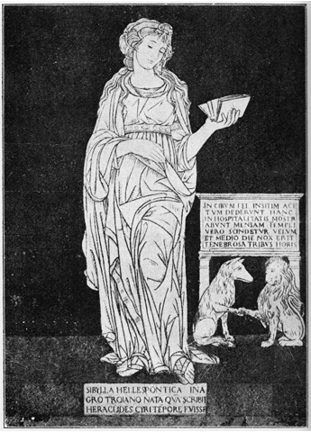
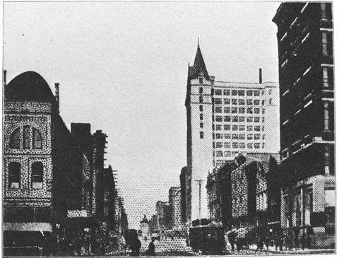

私の情緒は、
ある人は私の詩を官能的であるといふ。或はさういふものがあるかも知れない。けれども正しい見方はそれに反對する。すべての「官能的なもの」は、決して私の詩のモチーヴでない。それは主音の上にかかる倚音である。もしくは裝飾音である。私は感覺に醉ひ得る人間でない。私の眞に歌はうとする者は別である。それはあの艶めかしい一つの情緒――春の夜に聽く横笛の音――である。それは感覺でない、激情でない、興奮でない、ただ靜かに靈魂の影をながれる雲の郷愁である。遠い遠い實在への涙ぐましいあこがれである。
およそいつの時、いつの頃よりしてそれが來れるかを知らない。まだ
げにこの一つの情緒は、私の遠い氣質に屬してゐる。そは少年の昔よりして、今も猶私の夜床の枕におとづれ、なまめかしくも涙ぐましき横笛の音色をひびかす、いみじき横笛の音にもつれ吹き、なにともしれぬ哀愁の思ひにそそられて書くのである。
かくて私は詩をつくる。燈火の周圍にむらがる蛾のやうに、ある花やかにしてふしぎなる情緒の幻像にあざむかれ、そが見えざる實在の本質に觸れようとして、むなしくかすてらの脆い
されば私の詩を讀む人は、ひとへに私の言葉のかげに、この哀切かぎりなきえれぢいを聽くであらう。その笛の音こそは「艶めかしき形而上學」である。その笛の音こそはプラトオのエロス――靈魂の實在にあこがれる羽ばたき――である。そしてげにそれのみが私の所謂「音樂」である。「詩は何よりもまづ音樂でなければならない」といふ、その象徴詩派の信條たる音樂である。
感覺的鬱憂性！ それもまた私の遠い氣質に屬してゐる。それは春光の下に群生する櫻のやうに、或いはまた菊の酢えたる匂ひのやうに、よにも鬱陶しくわびしさの限りである。かくて私の生活は官能的にも頽廢の薄暮をかなしむであらう。げに憂鬱なる、憂鬱なるそれはまた私の敍情詩の
とはいへ私の最近の生活は、さうした感覺的のものであるよりはむしろより多く思索的の鬱憂性に傾いてゐる。（たとへば集中「意志と無明」の篇中に收められた詩篇の如きこの傾向に屬してゐる。これらの詩に見る宿命論的な暗鬱性は、全く思索生活の情緒に映じた殘像である。）かく私の詩の或るものは、おほむね感覺的鬱憂性に屬し、他の或るものは思索的鬱憂性に屬してゐる。しかしその何れにせよ、私の眞に傳へんとするリズムはそれでない。それらの「感覺的なもの」や「觀念的なもの」でない。それらのものは私の詩の衣裝にすぎない。私の詩の本質――よつて以てそれが詩作の動機となるところの、あの香氣の高い心悸の鼓動――は、ひとへにただあのいみじき横笛の音の魅惑にある。あの實在の世界への、故しらぬ思慕の哀傷にある。かく私は歌口を吹き、私のふしぎにして艶めかしき
されば私の詩風には、近代印象派の詩に見る如き官能の耽溺的靡亂がない。或いはまた重鬱にして息苦しき觀念詩派の壓迫がない。むしろ私の詩風はおだやかにして古風である。これは情想のすなほにして殉情のほまれ高きを尊ぶ。まさしく浪漫主義の正系を踏む情緒詩派の流れである。
「詩の目的は眞理や道徳を歌ふのでない。詩はただ詩のための表現である。」と言つたボドレエルの言葉ほど、藝術の本質を徹底的に觀破したものはない。我等は詩歌の要素と鑑賞とから、あらゆる不純の概念を驅逐するであらう。「醉」と「香氣」と、ただそれだけの芳烈な幸福を詩歌の「最後のもの」として決定する。もとより美の本質に關して言へば、どんな詭辯もそれの附加を許さない。
かつて詩集「月に吠える」の序に書いた通り、詩は私にとつての神祕でもなく信仰でもない。また況んや「生命がけの仕事」であつたり、「神聖なる精進の道」でもない。詩はただ私への「悲しき慰安」にすぎない。
生活の沼地に鳴く青鷺の聲であり、月夜の葦に暗くささやく風の音である。
詩はいつも時流の先導に立つて、來るべき世紀の感情を最も鋭敏に觸知するものである。されば詩集の眞の評價は、すくなくとも出版後五年、十年を經て決せらるべきである。五年、十年の後、はじめて一般の俗衆は、詩の今現に居る位地に追ひつくであらう。即ち詩は、發表することのいよいよ早くして、理解されることのいよいよ遲きを普通とする。かの流行の思潮を追つて、一時の淺薄なる好尚に適合する如きは、我等詩人の卑しみて能はないことである。
詩が常に俗衆を眼下に見くだし、時代の空氣に高く超越して、もつとも高潔清廉の氣風を尊ぶのは、それの本質に於て全く自然である。
詩を作ること久しくして、益益詩に自信をもち得ない。私の如きものは、みじめなる青猫の夢魔にすぎない。
利根川に近き田舍の小都市にて 著者
［＃改ページ］一。第一詩集『月に吠える』を出してから既に六年ほど經過した。この長い間私は重に思索生活に沒頭したのであるが、かたはら矢張詩を作つて居た。そこで漸やく一册に集つたのが、この詩集『青猫』である。
何分にも長い間に少し宛書いたものである故、詩の情想やスタイルの上に種種の［＃「種種の」は底本では「種々の」］變移があつて、一册の詩集に統一すべく、所所氣分の貫流を缺いた怨みがある。けれども全體として言へば、矢張書銘の『青猫』といふ感じが、一卷のライト・モチーヴとして著者の個性的氣稟を高調して居るやに思ふ。
二。集中の詩篇は、それぞれの情想やスタイルによつて、大體之れを六章に類別した。即ち「幻の寢臺」、「憂鬱なる櫻」、「さびしい青猫」、「閑雅な食慾」、「意志と無明」、「艶めける靈魂」他詩一篇である。この分類の中、最初の二章（「幻の寢臺」、「憂鬱なる櫻」）は、主として創作年代の順序によつて配列した。此等の章中に收められた詩篇は、概ね雜誌『感情』に掲載したものであるから、皆今から數年以前の舊作である。『感情』が廢刊されてからずゐぶん久しい間であるが、幸ひに殘本の合本があつて集録することを得た。同時代に他の雜誌へ寄稿したものは、すべて皆散佚して世に問ふべき機縁もない。
「さびしい青猫」以下の章に收められた詩は、何れもこの二三年來に於ける最近の收穫である。但し排列の順序は年代によらず、主として情想やスタイルの類別によつた。
三。私の第二詩集は、はじめ『憂鬱なる』とするつもりであつた。それはずつと以前から『感情』の裏表紙で豫告廣告を出して置いた如くである。然るにその後『憂鬱なる××』といふ題の小説が現はれたり、同じやうな書銘の詩集が出版されたりして、この「憂鬱」といふ語句の官能的にきらびやかな觸感が、當初に發見された時分の鮮新な香氣を稀薄にしてしまつた。そればかりでなく、私の詩風もその後によほど變轉して、且つ生活の主題が他方へ移つて行つた爲、今ではこの「取つて置きの書銘」を用ゐることが不可能になつた始末である。豫告の破約を斷るため、ここに一言しておく。
四。とにかくこの詩集は、あまりに長く出版を遲れすぎた。そのため書銘ばかりでなく、内容の方でも、いろいろ「持ち腐れ」になつてしまつた。その當時の詩壇から見て、可成に新奇で鮮新な發明であつた特種のスタイルなども、今日では詩壇一般の類型となつて居て、むしろ常套の臭氣が鼻につくやうにさへなつて居る。さういふ古い自分の詩を、今更ら今日の詩壇に向つて公表するのは、ふしぎに理由のない羞恥と腹立たしさとを感ずるものである。
五。附録の論文「自由詩のリズムに就て」は、この書物の跋と見るべきである。私の詩の讀者は勿論、一般に「自由詩を作る人」、「自由詩を讀む人」、「自由詩を批評する人」、「自由詩を論議する人」特に就中「自由詩が解らないと言ふ人」たちに讀んでもらふ目的で書いた。自由詩人としての我々の立場が、之れによつて幾分でも一般の理解を得ば本望である。
［＃改丁］
［＃ページの左右中央］
［＃改ページ］
つかれた心臟は夜 をよく眠る
私はよく眠る
ふらんねるをきたさびしい心臟の所有者だ
なにものか そこをしづかに動いてゐる夢の中なるちのみ兒
寒さにかじかまる蠅のなきごゑ
ぶむ ぶむ ぶむ ぶむ ぶむ ぶむ。
私はかなしむ この白つぽけた室内の光線を
私はさびしむ この力のない生命の韻動を。
戀びとよ
お前はそこに坐つてゐる 私の寢臺のまくらべに
戀びとよ お前はそこに坐つてゐる。
お前のほつそりした頸すぢ
お前のながくのばした髮の毛
ねえ やさしい戀びとよ
私のみじめな運命をさすつておくれ
私はかなしむ
私は眺める
そこに苦しげなるひとつの感情
病みてひろがる風景の憂鬱を
ああ さめざめたる部屋の隅から つかれて床をさまよふ蠅の幽靈
ぶむ ぶむ ぶむ ぶむ ぶむ ぶむ。
戀びとよ
私の部屋のまくらべに坐るをとめよ
お前はそこになにを見るのか
わたしについてなにを見るのか
この私のやつれたからだ 思想の過去に殘した影を見てゐるのか
戀びとよ
すえた菊のにほひを嗅ぐやうに
私は嗅ぐ お前のあやしい情熱を その青ざめた信仰を
よし二人からだをひとつにし
このあたたかみあるものの上にしも お前の白い手をあてて 手をあてて。
戀びとよ
この閑寂な室内の光線はうす紅く
そこにもまた力のない蠅のうたごゑ
ぶむ ぶむ ぶむ ぶむ ぶむ ぶむ。
戀びとよ
わたしのいぢらしい心臟は お前の手や胸にかじかまる子供のやうだ
戀びとよ
戀びとよ。
どこに私たちの悲しい寢臺があるか
ふつくりとした寢臺の 白いふとんの中にうづくまる手足があるか
私たち男はいつも悲しい心でゐる
私たちは寢臺をもたない
けれどもすべての娘たちは寢臺をもつ
すべての娘たちは 猿に似たちひさな手足をもつ
さうして白い大きな寢臺の中で小鳥のやうにうづくまる
すべての娘たちは 寢臺の中でたのしげなすすりなきをする
ああ なんといふしあはせの奴らだ
この娘たちのやうに
私たちもあたたかい寢臺をもとめて
私たちもさめざめとすすりなきがしてみたい。
みよ すべての美しい寢臺の中で 娘たちの胸は互にやさしく抱きあふ
心と心と
手と手と
足と足と
からだとからだとを紐にてむすびつけよ
心と心と
手と手と
足と足と
からだとからだとを撫でることによりて慰めあへよ
このまつ白の寢臺の中では
なんといふ美しい娘たちの皮膚のよろこびだ
なんといふいぢらしい感情のためいきだ。
けれども私たち男の心はまづしく
いつも悲しみにみちて大きな人類の寢臺をもとめる
その寢臺はばね仕掛けでふつくりとしてあたたかい
まるで大雪の中にうづくまるやうに
人と人との心がひとつに解けあふ寢臺
かぎりなく美しい愛の寢臺
ああ どこに求める 私たちの悲しい寢臺があるか
どこに求める
私たちのひからびた醜い手足
このみじめな疲れた魂の寢臺はどこにあるか。
ここの海岸には草も生えない
なんといふさびしい海岸だ
かうしてしづかに浪を見てゐると
浪の上に浪がかさなり
浪の上に白い夕方の月がうかんでくるやうだ
ただひとり出でて磯馴れ松の木をながめ
空にうかべる島と船とをながめ
私はながく手足をのばして寢ころんでゐる
ながく呼べどもかへらざる幸福のかげをもとめ
沖に向つて眺望する。
風にふかれる葦のやうに
私の心は弱弱しく いつも恐れにふるへてゐる
女よ
おまへの美しい精悍の右腕で
私のからだをがつしりと抱いてくれ
このふるへる病氣の心を しづかにしづかになだめてくれ
ただ抱きしめてくれ私のからだを
ひつたりと肩によりそひながら
私の弱弱しい心臟の上に
おまへのかはゆらしい あたたかい手をおいてくれ
ああ 心臟のここのところに手をあてて
女よ
さうしておまへは私に話しておくれ
涙にぬれたやさしい言葉で
「よい子よ
恐れるな なにものをも恐れなさるな
あなたは健康で幸福だ
なにものがあなたの心をおびやかさうとも あなたはおびえてはなりません
ただ遠方をみつめなさい
めばたきをしなさるな
めばたきをするならば あなたの弱弱しい心は鳥のやうに飛んで行つてしまふのだ
いつもしつかりと私のそばによりそつて
私のこの健康な心臟を
このうつくしい手を
この胸を この腕を
さうしてこの精悍の乳房をしつかりと。」
私はいつも都會をもとめる
都會のにぎやかな群集の中に居ることをもとめる
群集はおほきな感情をもつた浪のやうなものだ
どこへでも流れてゆくひとつのさかんな意志と愛欲とのぐるうぷだ
ああ ものがなしき春のたそがれどき
都會の入り混みたる建築と建築との日影をもとめ
おほきな群集の中にもまれてゆくのはどんなに樂しいことか
みよこの群集のながれてゆくありさまを
ひとつの浪はひとつの浪の上にかさなり
浪はかずかぎりなき日影をつくり 日影はゆるぎつつひろがりすすむ
人のひとりひとりにもつ憂ひと悲しみと みなそこの日影に消えてあとかたもない
ああ なんといふやすらかな心で 私はこの道をも歩いて行くことか
ああ このおほいなる愛と無心のたのしき日影
たのしき浪のあなたにつれられて行く心もちは涙ぐましくなるやうだ。
うらがなしい春の日のたそがれどき
このひとびとの群は 建築と建築との軒をおよいで
どこへどうしてながれ行かうとするのか
私のかなしい憂鬱をつつんでゐる ひとつのおほきな地上の日影
ただよふ無心の浪のながれ
ああ どこまでも どこまでも この群集の浪の中をもまれて行きたい
浪の行方は地平にけむる
ひとつの ただひとつの「方角」ばかりさしてながれ行かうよ。
そのじつにかはゆらしい むつくりとした工合はどうだ
そのまるまるとして菓子のやうにふくらんだ工合はどうだ
指なんかはまことにほつそりとしてしながよく
まるでちひさな青い魚類のやうで
やさしくそよそよとうごいてゐる樣子はたまらない
ああ その手の上に接吻がしたい
そつくりと口にあてて喰べてしまひたい
なんといふすつきりとした指先のまるみだらう
指と指との谷間に咲く このふしぎなる花の風情はどうだ
その匂ひは麝香のやうで 薄く汗ばんだ桃の花のやうにみえる。
かくばかりも麗はしくみがきあげた女性の指
すつぽりとしたまつ白のほそながい指
ぴあのの鍵盤をたたく指
針をもて絹をぬふ仕事の指
愛をもとめる肩によりそひながら
わけても感じやすい皮膚のうへに
かるく爪先をふれ
かるく爪でひつかき
かるくしつかりと押へつけるやうにする指のはたらき
そのぶるぶるとみぶるひをする愛のよろこび はげしく狡猾にくすぐる指
おすましで意地惡のひとさし指
卑怯で快活なこゆびのいたづら
親指の肥え太つたうつくしさと その暴虐なる野蠻性
ああ そのすべすべとみがきあげたいつぽんの指をおしいただき
すつぽりと口にふくんでしやぶつてゐたい いつまでたつてもしやぶつてゐたい
その手の甲はわつぷるのふくらみで
その手の指は氷砂糖のつめたい食慾
ああ この食慾
子供のやうに意地のきたない無恥の食慾。
この美しい都會を愛するのはよいことだ
この美しい都會の建築を愛するのはよいことだ
すべてのやさしい女性をもとめるために
すべての高貴な生活をもとめるために
この都にきて賑やかな街路を通るのはよいことだ
街路にそうて立つ櫻の竝木［＃「竝木」は底本では「並木」］
そこにも無數の雀がさへづつてゐるではないか。
ああ このおほきな都會の夜にねむれるものは
ただ一疋の青い猫のかげだ
かなしい人類の歴史を語る猫のかげだ
われの求めてやまざる幸福の青い影だ。
いかならん影をもとめて
みぞれふる日にもわれは東京を戀しと思ひしに
そこの裏町の壁にさむくもたれてゐる
このひとのごとき乞食はなにの夢を夢みて居るのか。
重たいおほきな羽をばたばたして
ああ なんといふ弱弱しい心臟の所有者だ。
花瓦斯のやうな明るい月夜に
白くながれてゆく生物の群をみよ
そのしづかな方角をみよ
この生物のもつひとつのせつなる情緒をみよ
あかるい花瓦斯のやうな月夜に
ああ なんといふ悲しげな いぢらしい蝶類の騷擾だ。
ふらんすからくる烟草のやにのにほひのやうだ
そのにほひをかいでゐると氣がうつとりとする
うれはしい かなしい さまざまのいりこみたる空の感情
つめたい銀いろの小鳥のなきごゑ
春がくるときのよろこびは
あらゆるひとのいのちをふきならす笛のひびきのやうだ
ふるへる めづらしい野路のくさばな
おもたく雨にぬれた空氣の中にひろがるひとつの音色
なやましき女のなきごゑはそこにもきこえて
春はしつとりとふくらんでくるやうだ。
春としなれば山奧のふかい森の中でも
くされた木株の中でもうごめくみみずのやうに
私のたましひはぞくぞくとして菌を吹き出す
たとへば毒だけ へびだけ べにひめぢのやうなもの
かかる菌の類はあやしげなる色香をはなちて
ひねもすさびしげに匂つてゐる。
春がくる 春がくる
春がくるときのよろこびは あらゆるひとのいのちを吹きならす笛のひびきのやうだ
そこにもここにも
ぞくぞくとしてふきだす菌 毒だけ
また藪かげに生えてほのかに光るべにひめぢの類。
この感情の伸びてゆくありさま
まつすぐに伸びてゆく喬木のやうに
いのちの芽生のぐんぐんとのびる。
そこの青空へもせいのびをすればとどくやうに
せいも高くなり胸はばもひろくなつた。
たいそううららかな春の空氣をすひこんで
小鳥たちが喰べものをたべるやうに
愉快で口をひらいてかはゆらしく
どんなにいのちの芽生たちが伸びてゆくことか。
草木は草木でいつさいに
ああ どんなにぐんぐんと伸びてゆくことか。
ひろびろとした野原にねころんで
まことに愉快な夢をみつづけた。
春はどこまできたか
春はそこまできて櫻の匂ひをかぐはせた
子供たちのさけびは野に山に
はるやま見れば白い浮雲がながれてゐる。
さうして私の心はなみだをおぼえる
いつもおとなしくひとりで遊んでゐる私のこころだ
この心はさびしい
この心はわかき少年の昔より 私のいのちに日影をおとした
しだいにおほきくなる孤獨の日かげ
おそろしい憂鬱の日かげはひろがる。
いま室内にひとりで坐つて
暮れゆくたましひの日かげをみつめる
そのためいきはさびしくして
とどまる蠅のやうに力がない
しづかに暮れてゆく春の夕日の中を
私のいのちは力なくさまよひあるき
私のいのちは窓の硝子にとどまりて
たよりなき子供等のすすりなく唱歌をきいた。
こんもりとした森の木立のなかで
いちめんに白い蝶類が飛んでゐる
むらがる むらがりて飛びめぐる
てふ てふ てふ てふ てふ てふ てふ
みどりの葉のあつぼつたい隙間から
ぴか ぴか ぴか ぴかと光る そのちひさな鋭どい翼
いつぱいに群がつてとびめぐる てふ てふ てふ てふ てふ てふ てふ てふ てふ てふ てふ てふ
ああ これはなんといふ憂鬱な幻だ
このおもたい手足 おもたい心臟
かぎりなくなやましい物質と物質との重なり
ああ これはなんといふ美しい病氣だらう
つかれはてたる神經のなまめかしいたそがれどきに
私はみる ここに女たちの投げ出したおもたい手足を
つかれはてた股や乳房のなまめかしい重たさを
その鮮血のやうなくちびるはここにかしこに
私の青ざめた屍體のくちびるに
額に 髮に 髮の毛に 股に 胯に 腋の下に 足くびに 足のうらに
みぎの腕にも ひだりの腕にも 腹のうへにも押しあひて息ぐるしく重なりあふ
むらがりむらがる 物質と物質との淫猥なるかたまり
ここにかしこに追ひみだれたる蝶のまつくろの集團
ああこの恐ろしい地上の陰影
このなまめかしいまぼろしの森の中に
しだいにひろがつてゆく憂鬱の日かげをみつめる
その私の心はばたばたと羽ばたきして
小鳥の死ぬるときの醜いすがたのやうだ
ああこのたへがたく惱ましい性の感覺
あまりに恐ろしく憂鬱なる。
註。「てふ」「てふ」はチヨーチヨーと讀むべからず。蝶の原音は「て・ふ」である。蝶の翼の空氣をうつ感覺を音韻に寫したものである。
［＃改丁］［＃ページの左右中央］
［＃改ページ］
［＃ページの左右中央］
感覺的憂鬱性！ それは櫻のはなの酢えた匂ひのやうに、白く埃つぽい外光の中で、いつもなやましい光を感じさせる。
［＃改ページ］
憂鬱なる櫻が遠くからにほひはじめた
櫻の枝はいちめんにひろがつてゐる
日光はきらきらとしてはなはだまぶしい
私は密閉した家の内部に住み
日毎に野菜をたべ 魚やあひるの卵をたべる
その卵や肉はくさりはじめた
遠く櫻のはなは酢え
櫻のはなの酢えた匂ひはうつたうしい
いまひとびとは帽子をかぶつて外光の下を歩きにでる
さうして日光が遠くにかがやいてゐる
けれども私はこの暗い室内にひとりで坐つて
思ひをはるかなる櫻のはなの下によせ
野山にたはむれる青春の男女によせる
ああいかに幸福なる人生がそこにあるか
なんといふよろこびが輝やいてゐることか
いちめんに枝をひろげた櫻の花の下で
わかい娘たちは踊ををどる
娘たちの白くみがいた踊の手足
しなやかにおよげる衣裝
ああ そこにもここにも どんなにうつくしい曲線がもつれあつてゐることか
花見のうたごゑは横笛のやうにのどかで
かぎりなき憂鬱のひびきをもつてきこえる。
いま私の心は涙をもてぬぐはれ
閉ぢこめたる窓のほとりに力なくすすりなく
ああこのひとつのまづしき心はなにものの生命 をもとめ
なにものの影をみつめて泣いてゐるのか
ただいちめんに酢えくされたる美しい世界のはてで
遠く花見の憂鬱なる横笛のひびきをきく。
その空家の庭に生えこむものは松の木の類
びはの木 桃の木 まきの木 さざんか さくらの類
さかんな樹木 あたりにひろがる樹木の枝
またそのむらがる枝の葉かげに ぞくぞくと繁茂するところの植物
およそ しだ わらび ぜんまい もうせんごけの類
地べたいちめんに重なりあつて這ひまはる
それら青いものの生命
それら青いもののさかんな生活
その空家の庭はいつも植物の日影になつて薄暗い
ただかすかにながれるものは一筋の小川のみづ
夜も晝もさよさよと悲しくひくくながれる水の音
またじめじめとした垣根のあたり
なめくぢ へび かへる とかげ類のぬたぬたとした氣味わるいすがたをみる。
さうしてこの幽邃な世界のうへに
月の光は前栽の植込からしつとりとながれこむ。
あはれにしめやかな この深夜のふけてゆく思ひに心をかたむけ
わたしの心は垣根にもたれて横笛を吹きすさぶ
ああ このいろいろのもののかくされた祕密の生活
かぎりなく美しい影と 不思議なすがたの重なりあふところの世界
月光の中にうかびいづる羊齒 わらび 松の木の枝
なめくぢ へび とかげ類の無氣味な生活
ああ わたしの夢によくみる このひと住まぬ空家の庭の祕密と
いつもその謎のとけやらぬおもむき深き幽邃のなつかしさよ。
おるがんをお彈きなさい 女のひとよ
あなたは黒い着物をきて
おるがんの前に坐りなさい
あなたの指はおるがんを這ふのです
かるく やさしく しめやかに 雪のふつてゐる音のやうに
おるがんをお彈きなさい 女のひとよ。
だれがそこで唱つてゐるの
だれがそこでしんみりと聽いてゐるの
ああこのまつ黒な憂鬱の闇のなかで
べつたりと壁にすひついて
おそろしい巨大の風琴を彈くのはだれですか
宗教のはげしい感情 そのふるへ
けいれんするぱいぷおるがん れくれえむ！
お祈りなさい 病氣のひとよ
おそろしいことはない おそろしい時間はないのです
お彈きなさい おるがんを
やさしく とうえんに しめやかに
大雪のふりつむときの松葉のやうに
あかるい光彩をなげかけてお彈きなさい
お彈きなさい おるがんを
おるがんをお彈きなさい 女のひとよ。
ああ まつくろのながい着物をきて
しぜんに感情のしづまるまで
あなたはおほきな黒い風琴をお彈きなさい
おそろしい暗闇の壁の中で
あなたは熱心に身をなげかける
あなた！
ああ なんといふはげしく陰鬱なる感情のけいれんよ。
川邊で鳴つてゐる
蘆や葦のさやさやといふ音はさびしい
しぜんに生えてる
するどい ちひさな植物 草本 の莖の類はさびしい
私は眼を閉ぢて
なにかの草の根を噛まうとする
なにかの草の汁をすふために 憂愁の苦い汁をすふために
げにそこにはなにごとの希望もない
生活はただ無意味な憂鬱の連なりだ
梅雨だ
じめじめとした雨の點滴のやうなものだ
しかし ああ また雨！ 雨！ 雨！
そこには生える不思議の草本
あまたの悲しい羽蟲の類
それは憂鬱に這ひまはる 岸邊にそうて這ひまはる
じめじめとした川の岸邊を行くものは
ああこの光るいのちの葬列か
光る精神の病靈か
物みなしぜんに腐れゆく岸邊の草むら
雨に光る木材質のはげしき匂ひ。
花やかな月夜である
しんめんたる常盤木の重なりあふところで
ひきさりまたよせかへす美しい浪をみるところで
かのなつかしい宗教の道はひらかれ
かのあやしげなる聖者の夢はむすばれる。
げにそのひとの心をながれるひとつの愛憐
そのひとの瞳孔 にうつる不死の幻想
あかるくてらされ
またさびしく消えさりゆく夢想の幸福とその怪しげなるかげかたち
ああ そのひとについて思ふことは
そのひとの見たる幻想の國をかんずることは
どんなにさびしい生活の日暮れを色づくことぞ
いま疲れてながく孤獨の椅子に眠るとき
わたしの家の窓にも月かげさし
月は花やかに空にのぼつてゐる。
佛よ
わたしは愛する おんみの見たる幻想の蓮の花瓣を
青ざめたるいのちに咲ける病熱の花の香氣を
佛よ
あまりに花やかにして孤獨なる。
しののめきたるまへ
家家の戸の外で鳴いてゐるのは
聲をばながくふるはして
さむしい田舍の自然からよびあげる母の聲です
とをてくう、とをるもう、とをるもう。
朝のつめたい
私のたましひは羽ばたきをする
この雨戸の隙間からみれば
よもの景色はあかるくかがやいてゐるやうです
されどもしののめきたるまへ
私の臥床にしのびこむひとつの憂愁
けぶれる木木の梢をこえ
遠い田舍の自然からよびあげる
とをてくう、とをるもう、とをるもう。
戀びとよ
戀びとよ
有明のつめたい障子のかげに
私はかぐ ほのかなる菊のにほひを
病みたる心靈のにほひのやうに
かすかにくされゆく白菊のはなのにほひを
戀びとよ
戀びとよ。
しののめきたるまへ
私の心は墓場のかげをさまよひあるく
ああ なにものか私をよぶ苦しきひとつの焦燥
このうすい
戀びとよ
母上よ
早くきてともしびの光を消してよ
私はきく 遠い地角のはてを吹く
とをてくう、とをるもう、とをるもう。
［＃改丁］
［＃ページの左右中央］
［＃改ページ］
［＃ページの左右中央］
ここには一疋の青猫が居る。さうして柳は風にふかれ、墓場には月が登つてゐる。
［＃改ページ］
雨のひどくふつてる中で
道路の街燈はびしよびしよぬれ
やくざな建築は坂に傾斜し へしつぶされて歪んでゐる
はうはうぼうぼうとした烟霧の中を
あるひとの運命は白くさまよふ
そのひとは大外套に身をくるんで
まづしく みすぼらしい鳶 のやうだ
とある建築の窓に生えて
風雨にふるへる ずつくりぬれた青樹をながめる
その青樹の葉つぱがかれを手招き
かなしい雨の景色の中で
厭やらしく 靈魂 のぞつとするものを感じさせた。
さうしてびしよびしよに濡れてしまつた。
影も からだも 生活も 悲哀でびしよびしよに濡れてしまつた。
恐ろしい山の相貌 をみた
まつ暗な夜空にけむりを吹きあげてゐる
おほきな蜘蛛のやうな眼 である。
赤くちろちろと舌をだして
うみざりがにのやうに平つくばつてる。
手足をひろくのばして麓いちめんに這ひ つた
つた
つたさびしくおそろしい闇夜である
がうがうといふ風が草を吹いてる 遠くの空で吹いてる。
自然はひつそりと息をひそめ
しだいにふしぎな 大きな山のかたちが襲つてくる。
すぐ近いところにそびえ
怪異な相貌 が食はうとする。
南洋の日にやけた裸か女のやうに
夏草の茂つてゐる波止場の向うへ ふしぎな赤錆びた汽船がはひつてきた
ふはふはとした雲が白くたちのぼつて
船員のすふ煙草のけむりがさびしがつてる。
わたしは鶉のやうに羽ばたきながら
さうして丈 の高い野茨の上を飛びまはつた
ああ 雲よ 船よ どこに彼女は航海の碇をすてたか
ふしぎな情熱になやみながら
わたしは沈默の墓地をたづねあるいた
それはこの草叢 の風に吹かれてゐる
しづかに 錆びついた 戀愛鳥の木乃伊 であつた。
風は柳を吹いてゐます
どこにこんな薄暗い墓地の景色があるのだらう。
なめくぢは垣根を這ひあがり
みはらしの方から生 あつたかい潮みづがにほつてくる。
どうして貴女 はここに來たの
やさしい 青ざめた 草のやうにふしぎな影よ
貴女は貝でもない 雉でもない 猫でもない
さうしてさびしげなる亡靈よ
貴女のさまよふからだの影から
まづしい漁村の裏通りで 魚 のくさつた臭ひがする
その腸 は日にとけてどろどろと生臭く
かなしく せつなく ほんとにたへがたい哀傷のにほひである。
ああ この春夜のやうになまぬるく
べにいろのあでやかな着物をきてさまよふひとよ
妹のやうにやさしいひとよ
それは墓場の月でもない 燐でもない 影でもない 眞理でもない
さうしてただなんといふ悲しさだらう。
かうして私の生命 や肉體 はくさつてゆき
「虚無」のおぼろげな景色のかげで
艶めかしくも ねばねばとしなだれて居るのですよ。
蝙蝠のむらがつてゐる野原の中で
わたしはくづれてゆく肉體の柱 をながめた
それは宵闇にさびしくふるへて
影にそよぐ死 びと草 のやうになまぐさく
ぞろぞろと蛆蟲の這ふ腐肉のやうに醜くかつた。
ああこの影を曳く景色のなかで
わたしの靈魂はむずがゆい恐怖をつかむ
それは港からきた船のやうに 遠く亡靈のゐる島島を渡つてきた
それは風でもない 雨でもない
そのすべては愛欲のなやみにまつはる暗い恐れだ
さうして蛇つかひの吹く鈍い音色に
わたしのくづれてゆく影がさびしく泣いた。
やさしい鴉毛の婦人よ
わたしの家根裏の部屋にしのんできて
麝香のなまめかしい匂ひをみたす
木製の椅子にさびしくとまつて
その嘴 は心臟 をついばみ 瞳孔 はしづかな涙にあふれる
夜鳥よ
このせつない戀情はどこからくるか
あなたの憂鬱なる衣裳をぬいで はや夜露の風に飛びされ。
この黄昏の野原のなかを
耳のながい象たちがぞろりぞろりと歩いてゐる。
黄色い夕月が風にゆらいで
あちこちに帽子のやうな草つぱがひらひらする。
さびしいですか お孃さん！
ここに小さな笛があつて その音色は澄んだ緑です。
やさしく歌口 をお吹きなさい
とうめいなる空にふるへて
あなたの蜃氣樓をよびよせなさい
思慕のはるかな海の方から
ひとつの幻像がしだいにちかづいてくるやうだ。
それはくびのない猫のやうで 墓場の草影にふらふらする
いつそこんな悲しい暮景の中で 私は死んでしまひたいのです。お孃さん！
潮みづのつめたくながれて
貝の齒はいたみに齲ばみ酢のやうに溶けてしまつた
ああここにはもはや友だちもない 戀もない
渚にぬれて亡靈のやうな草を見てゐる
その草の根はけむりのなかに白くかすんで
春夜のなまぬるい戀びとの吐息のやうです。
おぼろにみえる沖の方から
船人はふしぎな航海の歌をうたつて 拍子も高く楫の音がきこえてくる。
あやしくもここの磯邊にむらがつて
むらむらとうづ高くもりあがり また影のやうに這ひまはる
それは雲のやうなひとつの心像 さびしい寄生蟹 の幽靈ですよ。
かれらは青ざめたしやつぽをかぶり
うすぐらい尻尾 の先を曳きずつて歩きまはる
そしてみよ そいつの陰鬱なしやべるが泥土 を掘るではないか。
ああ草の根株は掘つくりかへされ
どこもかしこも曇暗な日ざしがかげつてゐる。
なんといふ退屈な人生だらう
ふしぎな葬式のやうに列をつくつて 大きな建物の影へ出這入りする
この幽靈のやうにさびしい影だ
硝子のぴかぴかするかなしい野外で
どれも青ざめた紙のしやつぽをかぶり
ぞろぞろと蛇の卵のやうにつながつてくる さびしい囚人の群ではないか。
つめたく青ざめた顏のうへに
け高くにほふ優美の月をうかべてゐます
月のはづかしい面影
やさしい言葉であなたの死骸に話しかける。
ああ 露しげく
しつとりとぬれた猫柳 夜風のなかに動いてゐます。
ここをさまよひきたりて
うれしい情 のかずかずを歌ひつくす
そは人の知らないさびしい情慾 さうして情慾です。
ながれるごとき涙にぬれ
私はくちびるに血潮をぬる
ああ なにといふ戀しさなるぞ
この青ざめた死靈にすがりつきてもてあそぶ
夜風にふかれ
猫柳のかげを暗くさまよふよ そは墓場のやさしい歌ごゑです。
猫のやうに憂鬱な景色である
さびしい風船はまつすぐに昇つてゆき
りんねるを着た人物がちらちらと居るではないか。
もうとつくにながい間
だれもこんな波止場を思つてみやしない。
さうして荷揚げ機械のばうぜんとしてゐる海角から
いろいろさまざまな生物意識が消えて行つた。
そのうへ帆船には綿が積まれて
それが沖の方でむくむくと考へこんでゐるではないか。
なんと言ひやうもない
身の毛もよだち ぞつとするやうな思ひ出ばかりだ。
ああ神よ もうとりかへすすべもない
さうしてこんなむしばんだ囘想から いつも幼な兒のやうに泣いて居よう。
どこに私らの幸福があるのだらう
悲しみはいよいよふかく湧いてくるではないか。
春は幔幕のかげにゆらゆらとして
遠く俥にゆすられながら行つてしまつた。
どこに私らの戀人があるのだらう
ばうばうとした野原に立つて口笛を吹いてみても
もう永遠に空想の娘らは來やしない。
なみだによごれためるとんのづぼんをはいて
私は
ああもう希望もない 名譽もない 未來もない。
さうしてとりかへしのつかない悔恨ばかりが
野鼠のやうに走つて行つた。
この生 づくりにされたからだは
きれいに しめやかに なまめかしくも彩色されてる
その胸も その脣 も その顏も その腕も
ああ みなどこもしつとりと膏油や刷毛で塗られてゐる。
やさしい五月の死びとよ
わたしは緑金の蛇のやうにのたうちながら
ねばりけのあるものを感觸し
さうして「死」の絨毯に肌身をこすりねりつけた。
地獄の鬼がまはす車のやうに
冬の日はごろごろとさびしくまはつて
ああ こんな陰鬱な季節がつづくあひだ
私は幻の駱駝にのつて
ふらふらとかなしげな旅行にでようとする。
どこにこんな荒寥の地方があるのだらう
年をとつた乞食の群は
いくたりとなく隊列のあとをすぎさつてゆき
禿鷹の屍肉にむらがるやうに
きたない小蟲が燒地 の穢土 にむらがつてゐる。
なんといふいたましい風物だらう
どこにもくびのながい花が咲いて
それがゆらゆらと動いてゐるのだ
考へることもない かうして暮れ方 がちかづくのだらう
戀や孤獨やの一生から
はりあひのない心像も消えてしまつて ほのかに幽靈のやうに見えるばかりだ。
どこを風見の鷄 が見てゐるのか
冬の日のごろごろとる瘠地の丘で もろこしの葉が吹かれてゐる。
る瘠地の丘で もろこしの葉が吹かれてゐる。むくむくと肥えふとつて
白くくびれてゐるふしぎな球形の幻像よ
それは耳もない 顏もない つるつるとして空にのぼる野蔦のやうだ
夏雲よ なんたるとりとめのない寂しさだらう
どこにこれといふ信仰もなく たよりに思ふ戀人もありはしない。
わたしは駱駝のやうによろめきながら
椰子の實の日にやけた核 を噛みくだいた。
ああ こんな乞食みたいな生活から
もうなにもかもなくしてしまつた
たうとう風の死んでる野道へきて
もろこしの葉うらにからびてしまつた。
なんといふさびしい自分の來歴だらう。
［＃改丁］［＃ページの左右中央］
［＃改ページ］
いくつかの季節はすぎ
もう憂鬱の櫻も白つぽく腐れてしまつた
馬車はごろごろと遠くをはしり
海も 田舍も ひつそりとした空氣の中に眠つてゐる
なんといふ怠惰な日だらう
運命はあとからあとからとかげつてゆき
さびしい病鬱は柳の葉かげにけむつてゐる
もう暦もない 記憶もない
わたしは燕のやうに巣立ちをし さうしてふしぎな風景のはてを翔つてゆかう。
むかしの戀よ 愛する猫よ
わたしはひとつの歌を知つてる
さうして遠い海草の焚けてる空から 爛れるやうな接吻 を投げよう
ああ このかなしい情熱の外 どんな言葉も知りはしない。
松林の中を歩いて
あかるい氣分の
遠く市街を離れたところで
だれも訪づれてくるひとさへなく
林間の かくされた 追憶の夢の中の
をとめは戀戀の羞をふくんで
あけぼののやうに爽快な 別製の皿を運んでくる仕組
私はゆつたりとふほふくを取つて
おむれつ ふらいの類を喰べた。
空には白い雲が浮んで
たいそう閑雅な食慾である。
馬車の中で
私はすやすやと眠つてしまつた。
きれいな婦人よ
私をゆり起してくださるな
明るい街燈の
すずしい緑蔭の田舍をすぎ
いつしか海の匂ひも行手にちかくそよいでゐる。
ああ
私はうつつにうつつを追ふ
きれいな婦人よ
旅館の花ざかりなる軒にくるまで
私をゆり起してくださるな。
表現詩派
このながい
をんなの圓い腕のやうで
空にによつきり
空は青明な弧球ですが
どこにも重心の支へがない
この全景は象のやうで
妙に膨大の夢をかんじさせる。
この密林の奧ふかくに
おほきな
ふしぎな象の耳のやうだ。
薄闇の濕地にかげをひいて
ぞくぞくと這へる
蛇 とかげ ゐもり 蛙 さんしようをの類。
なにをあだむが追憶したか
原始の情緒は雲のやうで
むげんにいとしい愛のやうで
はるかな記憶の彼岸にうかんで
とらへどころもありはしない。
書生は陰氣な寢臺から
家畜のやうに這ひあがつた
書生は羽織をひつかけ
かれの見る自然へ出かけ突進した。
自然は明るく小綺麗でせいせいとして
そのうへにも匂ひがあつた
森にも 辻にも 賣店にも
どこにも青空がひるがへりて美麗であつた
そんな輕快な天氣に
美麗な
つた。わたくし思ふに
思想はなほ天候のやうなものであるか
書生は書物を日向にして
ながく幸福のにほひを嗅いだ。
俥に乘つてはしつて行くとき
野も 山も ばうばうとして霞んでみえる
柳は風にふきながされ
燕も 歌も ひよ鳥も かすみの中に消えさる
ああ 俥のはしる
ふしぎな ばうばくたる景色を行手にみる
その風光は遠くひらいて
さびしく憂鬱な笛の音を吹き鳴らす
ひとのしのびて耐へがたい情緒である。
このへんてこなる方角をさして行け
春の朧げなる柳のかげで 歌も燕もふきながされ
わたしの俥やさんはいつしんですよ。
［＃改丁］
［＃ページの左右中央］
［＃改ページ］
［＃ページの左右中央］
だまつて道ばたの草を食つてる
みじめな 因果の 宿命の 蒼ざめた馬の影です。
みじめな 因果の 宿命の 蒼ざめた馬の影です。
［＃改ページ］
冬の曇天の 凍りついた天氣の下で
そんなに憂鬱な自然の中で
だまつて道ばたの草を食つてる
みじめな しよんぼりした 宿命の 因果の 蒼ざめた馬の影です
わたしは影の方へうごいて行き
馬の影はわたしを眺めてゐるやうす。
ああはやく動いてそこを去れ
わたしの生涯 の映畫幕 から
すぐに すぐに外 りさつてこんな幻像を消してしまへ
私の「意志」を信じたいのだ。馬よ！
因果の 宿命の 定法の みじめなる
絶望の凍りついた風景の乾板から
蒼ざめた影を逃走しろ。
鬱蒼としげつた森林の樹木のかげで
ひとつの思想を歩ませながら
佛は蒼明の自然を感じた
どんな瞑想をもいきいきとさせ
どんな涅槃にも溶け入るやうな
そんな美しい月夜をみた。
「思想は一つの意匠であるか」
佛は月影を踏み行きながら
かれのやさしい心にたづねた。
雨のふる間
眺めは白ぼけて
建物 建物 びたびたにぬれ
さみしい荒廢した田舍をみる
そこに感情をくさらして
かれらは馬のやうにくらしてゐた。
私は家の壁をめぐり
家の壁に生える苔をみた
かれらの食物は非常にわるく
精神さへも梅雨じみて居る。
雨のながくふる間
私は退屈な田舍に居て
退屈な自然に漂泊してゐる
薄ちやけた幽靈のやうな影をみた。
私は貧乏を見たのです
このびたびたする雨氣の中に
ずつくり濡れたる 孤獨の 非常に厭やらしいものを見たのです。
軟風のふく日
暗鬱な
しづかな木立の奧で落葉する路を歩いてゐた。
天氣はさつぱりと晴れて
赤松の梢にたかく囀鳥の騷ぐをみた
愉快な小鳥は胸をはつて
ふたたび情緒の調子をかへた。
ああ 過去の私の鬱陶しい瞑想から 環境から
どうしてけふの情感をひるがへさう
かつてなにものすら失つてゐない
人生においてすら。
人生においてすら 私の失つたのは快適だけだ
ああしかし あまりにひさしく快適を失つてゐる。
薄暮の疲勞した季節がきた
どこでも室房はうす暗く
慣習のながい疲れをかんずるやうだ
雨は往來にびしよびしよして
貧乏な長屋が竝びて［＃「竝びて」は底本では「並びて」］ゐる。
こんな季節のながいあひだ
ぼくの生活は落魄して
ひどく窮乏になつてしまつた
家具は一隅に投げ倒され
冬の 埃の 薄命の日ざしのなかで
蠅はぶむぶむと窓に飛んでる。
こんな季節のつづく間
ぼくのさびしい訪問者は
老年の よぼよぼした いつも白粉くさい貴婦人です。
ああ彼女こそ僕の昔の戀人
古ぼけた記憶の かあてんの影をさまよひあるく情慾の影の影だ。
こんな白雨のふつてる間
どこにも新しい信仰はありはしない
詩人はありきたりの思想をうたひ
民衆のふるい傳統は疊の上になやんでゐる
ああこの厭やな天氣
日ざしの鈍い季節。
ぼくの感情を燃え爛すやうな構想は
ああもう どこにだつてありはしない。
人家は地面にへたばつて
おほきな蜘蛛のやうに眠つてゐる。
さびしいまつ暗な自然の中で
動物は恐れにふるへ
なにかの夢魔におびやかされ
かなしく青ざめて吠えてゐます。
のをあある とをあある やわあ
もろこしの葉は風に吹かれて
さわさわと闇に鳴つてる。
お聽き！ しづかにして
道路の向うで吠えてゐる
あれは犬の遠吠だよ。
のをあある とをあある やわあ
「犬は病んでゐるの？ お母あさん。」
「いいえ子供
犬は飢ゑてゐるのです。」
遠くの空の微光の方から
ふるへる物象のかげの方から
犬はかれらの敵を眺めた
遺傳の 本能の ふるいふるい記憶のはてに
あはれな先祖のすがたをかんじた。
犬のこころは恐れに青ざめ
夜陰の道路にながく吠える。
のをあある とをあある のをあある やわああ
「犬は病んでゐるの？ お母あさん。」
「いいえ子供
犬は飢ゑてゐるのですよ。」
ねぼけた櫻の咲くころ
白いぼんやりした顏がうかんで
窓で見てゐる。
ふるいふるい記憶のかげで
どこかの波止場で逢つたやうだが
菫の病鬱の匂ひがする
外光のきらきらする硝子窓から
ああ遠く消えてしまつた 虹のやうに。
私はひとつの憂ひを知る
ふたたび永遠にかへつて來ない。
わたしは田舍の
まづしい農家の庭に羽ばたきし
垣根をこえて
わたしは
ああ この冬の日の陽ざしのかげに
さびしく乾地の草をついばむ
わたしは白つぽい病氣の
あはれな かなしい 羽ばたきをする
私はかなしい田舍の
家根をこえ
垣根をこえ
墓場をこえて
はるかの野末にふるへさけぶ
ああ私はこはれた日時計 田舍の白つぽい
僕等が藪のかげを通つたとき
まつくらの地面におよいでゐる
およおよとする
僕等は月の影をみたのだ。
僕等が草叢をすぎたとき
さびしい葉ずれの隙間から鳴る
そわそわといふ小笛をきいた。
僕等は風の聲をみたのだ。
僕等はたよりない子供だから
僕等のあはれな感觸では
わづかな現はれた物しか見えはしない。
僕等は遙かの丘の向うで
ひろびろとした自然に住んでる
かくれた萬象の密語をきき
見えない生き物の動作をかんじた。
僕等は電光の森かげから
夕闇のくる地平の方から
烟の淡じろい影のやうで
しだいにちかづく巨像をおぼえた
なにかの妖しい
魔物の迫れる恐れをかんじた。
おとなの知らない
自然は僕等をおびやかした
僕等は葦のやうにふるへながら
さびしい曠野に泣きさけんだ。
「お母ああさん！ お母ああさん！」
［＃改丁］
［＃ページの左右中央］
［＃改ページ］
そよげる
やはらかい草の影から
花やかに いきいきと目をさましてくる情慾
燃えあがるやうに
たのしく
うれしく
こころ春めく春の感情。
つかれた
孤獨の暗い部屋の中にも
しぜんとやはらかく そよげる窓の光はきたる
いきほひたかぶる機能の昂進
そは世に艶めけるおもひのかぎりだ
勇氣にあふれる希望のすべてだ。
ああこのわかやげる思ひこそは
春日にとける雪のやうだ
やさしく芽ぐみ
しぜんに感ずるぬくみのやうだ
たのしく
うれしく
こころときめく性の躍動。
とざせる思想の底を割つて
しづかにながれるいのちをかんずる
あまりに憂鬱のなやみふかい沼の底から
わづかに水のぬくめるやうに
さしぐみ
はぢらひ
ためらひきたれる春をかんずる。
深夜のしづかな野道のほとりで
さびしい電燈が光つてゐる
さびしい風が吹きながれる
このあたりの山には樹木が多く
枝葉もしげく鬱蒼とこもつてゐる。
そこやかしこの暗い森から
また遙かなる山山の麓の方から
さびしい弧燈をめあてとして
むらがりつどへる蛾をみる。
光にうづまき くるめき 押しあひ死にあふ小蟲の群團。
人里はなれた山の奧にも
夜ふけてかがやく弧燈をゆめむ。
さびしい花やかな情緒をゆめむ。
さびしい花やかな燈火 の奧に
ふしぎな性の悶えをかんじて
重たい翼 をばたばたさせる
かすてらのやうな蛾をみる
あはれな 孤獨の あこがれきつたいのちをみる。
いのちは光をさして飛びかひ
光の周圍にむらがり死ぬ
ああこの賑はしく 艶めかしげなる春夜の動靜
露つぽい空氣の中で
花やかな弧燈は眠り 燈火はあたりの自然にながれてゐる。
ながれてゐる哀傷の夢の影のふかいところで
私はときがたい神祕をおもふ
萬有の 生命の 本能の 孤獨なる
永遠に永遠に孤獨なる 情緒のあまりに花やかなる。
市街を遠くはなれて行つて
僕等は山頂の草に坐つた
空に風景はふきながされ
ぎぼし ゆきしだ わらびの類
ほそくさよさよと草地に生えてる。
君よ辨當をひらき
はやくその卵を割つてください。
私の食慾は光にかつゑ
あなたの白い指にまつはる
果物の皮の甘味にこがれる。
君よ なぜ早く籠をひらいて
鷄肉の 腸詰の 砂糖煮の 乾酪 のご馳走をくれないのか
ぼくは飢ゑ
ぼくの情慾は身をもだえる。
君よ
君よ
疲れて草に投げ出してゐる
むつちりとした手足のあたり
ふらんねるをきた胸のあたり
ぼくの愛着は熱奮して 高潮して
ああこの苦しさ 壓迫にはたへられない。
高原の草に坐つて
あなたはなにを眺めてゐるのか
あなたの思ひは風にながれ
はるかの市街は空にうかべる
ああ ぼくのみひとり焦燥して
この青青とした草原の上
かなしい願望に身をもだえる。
あかるい屏風のかげにすわつて
あなたのしづかな寢息をきく。
香爐のかなしいけむりのやうに
そこはかとたちまよふ
女性のやさしい匂ひをかんずる。
かみの毛ながきあなたのそばに
睡魔のしぜんな言葉をきく
あなたはふかい眠りにおち
わたしはあなたの夢をかんがふ
このふしぎなる情緒
影なきふかい想ひはどこへ行くのか。
薄暮のほの白いうれひのやうに
はるかに幽かな湖水をながめ
はるばるさみしい麓をたどつて
見しらぬ遠見の山の峠に
あなたはひとり道にまよふ 道にまよふ。
ああ なににあこがれもとめて
あなたはいづこへ行かうとするか
いづこへ いづこへ 行かうとするか
あなたの感傷は夢魔に饐えて
白菊の花のくさつたやうに
ほのかに神祕なにほひをたたふ。
（とりとめもない夢の氣分とその抒情）
しつとりとした襦袢につつむ
くびれたごむの 跳ねかへす若い
こんなに近く抱いてるうれしさ
あなたの胸は鼓動にたかまり
その手足は肌にふれ
ほのかにつめたく やさしい感觸の匂ひをつたふ。
ああこの溶けてゆく春夜の灯かげに
厚くしつとりと化粧されたる
ひとつの白い額をみる
ちひさな可愛いくちびるをみる
まぼろしの夢に浮んだ顏をながめる。
春夜のただよふ靄の中で
わたしはあなたの思ひをかぐ
あなたの思ひは愛にめざめて
ぱつちりとひらいた黒い
夢におどろき
みしらぬ歡樂をあやしむやうだ。
しづかな情緒のながれを通つて
ふたりの心にしみゆくもの
ああこのやすらかな やすらかな
すべてを愛に
嫋めかしくも媚ある
こんなに近く抱いてるうれしさ
花園にそよげるばらのやうで
情愁のなやましい性のきざしは
櫻のはなの咲いたやうだ。
［＃改丁］
［＃ページの左右中央］
［＃改ページ］
通行する軍隊の印象
この重量のある機械は
地面をどつしりと壓へつける
地面は強く踏みつけられ
反動し
濛濛とする埃をたてる。
この日中を通つてゐる
巨重の逞ましい機械をみよ
黝鐵の油ぎつた
ものすごい頑固な巨體だ
地面をどつしりと壓へつける
巨きな集團の動力機械だ。
づしり、づしり、ばたり、ばたり
ざつく、ざつく、ざつく、ざつく。
この兇逞な機械の行くところ
どこでも風景は褪色し
黄色くなり
日は空に沈鬱して
意志は重たく壓倒される。
づしり、づしり、ばたり、ばたり
お一、二、お一、二。
お この重壓する
おほきなまつ黒の集團
浪の押しかへしてくるやうに
重油の濁つた流れの中を
熱した銃身の列が通る
無數の疲れた顏が通る。
ざつく、ざつく、ざつく、ざつく
お一、二、お一、二。
暗澹とした空の下を
重たい鋼鐵の機械が通る
無數の擴大した
それらの
黄色い風景の恐怖のかげに
空しく力なく彷徨する。
疲勞し
困
幻惑する。
お一、二、お一、二
歩調取れえ！
お このおびただしい
埃の低迷する道路の上に
かれらは憂鬱の日ざしをみる
ま白い幻像の市街をみる
感情の暗く幽囚された。
づしり、づしり、づたり、づたり
ざつく、ざつく、ざつく、ざつく。
いま日中を通行する
黝鐵の凄く油ぎつた
巨重の逞ましい機械をみよ
この兇逞な機械の踏み行くところ
どこでも風景は褪色し
空氣は黄ばみ
意志は重たく壓倒される。
づしり、づしり、づたり、づたり
づしり、どたり、ばたり、ばたり。
お一、二、お一、二。
［＃改丁］
歴史の近い頃まで、詩に關する一般の觀念はかうであつた。「詩とは言葉の拍節正しき調律即ち韻律を踏んだ文章である」と。この觀念から文學に於ける二大形式、「韻文」と「散文」とが相對的に考へられて來た。最近文學史上に於ける一つの不思議は、我我の中の或る者によつて、散文で書いた詩――それは「自由詩」「無韻詩」又は「散文詩」の名で呼ばれる――が發表されたことである。この大膽にして新奇な試みは、詩に關する從來の常識を根本からくつがへしてしまつた。詩に就いて、世界は新らしい概念を構成せねばならぬ。
勿論、そこでは多くの議論と宿題とが豫期される。我我の詩の新しき概念は、それが構成され得る前に、先づ以て十分に吟味せねばならぬ。果して自由詩は「詩」であるかどうか。今日一派の有力なる詩論は、毅然として「自由詩は詩に非ず」と主張してゐる。彼等の哲學は言ふ。「散文で書いたもの」は、それ自ら既に散文ではないか。散文であつて、同時にまたそれが詩であるといふのは矛盾である。散文詩又は無韻詩の名は、言語それ自身の中に矛盾を含んで居る。かやうな概念は成立し得ない。元來、詩の詩たる所以――よつて以てそれが散文から類別される所以――は、主として全く韻律の有無にある。韻律を離れて尚詩有りと考ふるは一つの妄想である。けだし
我我の子供は、我我の中での原始人である。彼等の生活はすべて本然と自然とにしたがつて居る。されば子供たちは如何に歌ふか。彼等の無邪氣な即興詩をみよ。子供等の詩的發想は、常に必ず一定の拍節正しき韻律の形式で歌はれる。自然の状態に於て、子供等の作る詩に自由詩はない。
そもそも如何にして
かくの如きものは、自由詩に對する最も
しばしば淺薄な思想は言ふ。「自由詩は韻律の形式に拘束されない。故に自由であり、自然である。」と。この程度の稚氣は一笑に價する。反對に、自由詩に對する非難の根柢は、それが詩として不自然な表現であるといふ一事にある。この論旨のために、我我の反對者が提出した前述の引例は、すべて皆眞實である。實際、上古の純樸な自然詩や、人間情緒の純眞な發露である多くの民謠俗歌の類は、すべて皆一定の拍節正しき格調を以て歌はれて居る。人間本然の純樸な詩的發想は、歸せずして拍節の形式と一致して居る。不定形律の詩は決して本然の状態に見出せない。ばかりでなく、我我自身の場合を顧みてもさうである。我我の情緒が昂進して、何かの強い詩的感動に打たれる時、自然我我の言葉には抑揚がついてくる。そしてこの抑揚は、心理的必然の傾向として、常に音樂的拍節の快美な進行と一致する故に、知らず知らず一定の韻律がそこに形成されてくる。一方、詩興はまたこの韻律の快感によつて刺激され、リズムと情想とは、此所に互に相待ち相助けて、いよいよ益益詩的感興の高潮せる絶頂に我等を運んで行くのである。かくて我等の言葉はいよいよ滑らかに、いよいよ口調よく、そしていよいよ無意識に「韻律の周期的なる拍節」の形式を構成して行く。思ふにかくの如き事態は、すべての原始的な詩歌の發生の起因を説明する。詩と韻律の關係は、けだし心理的にも必然の因果である如く思はれる。
然るに我等の自由詩からは、かうした詩の本然の形式が見出せない。音樂的拍節の一定の進行は、自由詩に於て全く缺けてゐる者である。ばかりでなく、自由詩は却つてその「規則正しき拍節の進行」を忌み、俗語の所謂「調子づく」や「口調のよさ」やを淺薄幼稚なものとして擯斥する。それ故に我等は、自由詩の創作に際して、しばしば不自然の抑壓を自らの情緒に加へねばならぬ。でないならば、我等の詩興は感興に乘じて高翔し、ややもすれば「韻律の甘美な誘惑」に乘せられて、不知不覺の中に「口調の好い定律詩」に變化してしまふ恐れがある。
元來、詩の情操は、散文の情操と性質を別にする。詩を思ふ心は、一つの高翔せる浪のやうなものである。それは常に現實的實感の上位を跳躍して、高く天空に向つて押しあげる意志であり、一つの甘美にして醗酵せる情緒である。かかる種類の情操は、決して普通の散文的情操と同じでない。したがつて詩の情操は、自然また特種な詩的表現の形式を要求する。言ひ換へれば、詩の韻律形式は、詩の發想に於て最も必然自由なる自然の表現である。然り、詩は韻律の形式に於てこそ自由である。無韻律の不定形律――即ち散文形式――は、詩のために自由を許すものでなくして、却つて不自由を強ひるものである。然らば「自由詩」とは何の謂ぞ。所謂自由詩はその實「不自由詩」の謂ではないか。けだし、「散文で詩を書く」ことの不自然なのは、「韻文で小説を書く」ことの不自然なのと同じく、
自由詩に對するかくの如き論難は、彼等が自由詩を「散文で書いたもの」と見る限りに於て正當である。そしてまた此所に彼等の誤謬の發端がある。なぜならば眞實なる事實として、自由詩は決して「散文で書いたもの」でないからである。しかしながらその辯明は後に讓らう。此所では彼等の言にしたがひ、また一般の常識的觀念にしたがひ、暫らくこの假説を許しておかう。然り、一般の觀念にしたがふ限り、自由詩は確かに散文で書いた「韻律のない詩」である。故にこの見識に立脚して、自由詩を不自然な表現だと罵るのは當を得て居る。我等はあへてそれに抗辯しない。よしたとへ彼等の見る如く、自由詩が眞に不自然な者であるとした所で、尚且つあへて反駁すべき理由を認めない、なぜならばこの「自然的でない」といふ事實は、この場合に於て「原始的でない」を意味する。しかして文明の意義はすべての「原始的なもの」を「人文的なもの」に向上させるにある。されば大人が子供よりも、文明人が野蠻人よりも、より價値の高い人間として買はれるやうに、そのやうにまた我等の成長した敍情詩も、それが自然的でない理由によつてすら、原始の素樸な民謠や俗歌よりも高價に買はるべきではないか。けだし自由詩は、近世紀の文明が生んだ世界の最も進歩した詩形である。そして此所に自由詩の唯一の價値がある。
世界の敍情詩の歴史は、最近佛蘭西に起つた象徴主義の運動を紀元として、明白に前後の二期に區分された。前派の敍情詩と後派の敍情詩とは、殆んど本質的に異つて居る。新時代の敍情詩は、單なる「純情の素朴な詠嘆」でなく、また「觀念の平面的なる敍述」でもなく、實に驚くべき複雜なる叡智的の内容と表現とを示すに至つた。（但し此所に注意すべきは、所謂「象徴詩」と「象徴主義」との別である。かつてボドレエルやマラルメによつて代表された一種の頽廢氣分の詩風、即ち所謂「象徴詩」なるものは、その特色ある名稱として用ゐられる限り、今日既に廢つてしまつた。しかしながら象徴主義そのものの根本哲學は今日尚依然として多くの詩派――表現派、印象派、感情派等――の主調となつて流れてゐる。自由詩形もまた此の哲學から胎出された。）
象徴主義が唱へた第一のモツトオは、「何よりも先づ音樂へ」であつた。しかしこの標語は、かつて昔から詩の常識として考へられて居た類似の觀念と別である。ずつと昔から、詩と音樂の密接な關係が認められて居た。「詩は言葉の音樂である」といふ思想は、早くから一般の常識となつて居た。しかしこの關係は、專ら詩と音樂との外面形式に就いて言はれたのである。即ち詩の表現が、それ自ら音樂の拍節と一致し、それ自ら音樂と同じ韻律形式の上に立脚する事實を指したのであつた。然るに今日の新しい意味はさうでない。今日言ふ意味での「詩と音樂の一致」は、何等形式上での接近や相似を意識して居ない。詩に於ける外形の音樂的要素――拍節の明晰や、格調の正しき形式や、音韻の節律ある反覆や――はむしろ象徴主義が正面から排斥した者であり、爾後の詩壇に於て一般に閑却されてしまつた。故にもしこの方面から觀察するならば、或る音樂家の論じた如く、今日の詩は確かに「非音樂的なもの」になつて來た。けれどもさうでなく、我我の詩に求めてゐるものは實に「内容としての音樂」である。
我我は外觀の類似から音樂に接近するのでなく、直接「音樂そのもの」の縹渺するいめえぢの世界へ、我我自身を飛び込ませようといふのである。かくの如き詩は、もはや「形の上での音樂」でなくして「感じの上での音樂」である。そこで奏される
「耳に聽えない
定律詩と自由詩との特異なる相違を一言でいへば、實に「拍子本位」と「旋律本位」との音樂的異別である。我我が定律詩を捨てて自由詩へ走つた理由は、理論上では象徴主義の詩學に立脚してゐるが、趣味の上から言ふと、正直のところ、定律詩の韻律に退屈したのである。定律詩の音樂的效果は、主としてその明晰にして強固なる拍節にある。然るに我我の時代の趣味は、かかる強固なる拍節を悦ばない。我我の神經にまで、そはむしろ單調にして不快なる者の如く聽えてきた。我我の音樂的嗜好は、遙かに「より軟らかい拍節」と「より高調されたる旋律」とを欲してきた。即ち我我は「拍節本位」「拍子本位」の音樂を捨てて、新しく「感情本位」「旋律本位」の音樂を創造すべく要求したのである。かかる趣味の變化は、明らかに古典的ゴシツク派の藝術が近代に於て衰退せる原因と、一方に於て自由主義や浪漫主義の興隆せる原因を語つてゐる。しかして自由詩は、實にこの時代的の趣味から胚胎された。
それ故に自由詩には、定律詩に見る如き音韻の明晰なる拍節がない。或る人人は次の如き假説――詩の本質は韻律以外にない。自由詩がもし詩であるならば必然そこに何かの韻律がなければならない。――を證明する目的から、しばしば自由詩の詩語を分解して、そこから一定の拍節律を發見すべく骨を折つてゐる。しかしこの努力はいつも必ず失敗である。自由詩の拍節は常に不規則であつて且つ散漫してゐる。定韻律に見る如き、一定の形式ある周期的の強い拍節は、到底どの自由詩からも聽くことはできない。所詮、自由詩の拍節は、極めて不鮮明で薄弱なものにすぎないのである。けだし自由詩の高唱する所は拍節にない。我我は詩の拍節よりも、むしろ詩の感情それ自身――即ち旋律――を重視する。我我の詩語はそれ自ら情操の抑揚であり、それ自ら一つの美しい旋律である。されば我我の讀者は、我我の詩から「
されば此の限りに於て、自由詩は勿論また音樂的である。そは「拍子本位の音樂」でない。けれども「旋律本位の音樂」である。しかしながら注意すべきは、詩語に於ける韻律は、拍節の如く外部に「形」として現はれるものでないことである。詩の拍節は――平仄律であつても、語數律であつても――明白に形體に示されてゐる。我我は耳により、眼により、指を折つて數へることにより、詩のすべての拍節を一一指摘することができる。之れに反して旋律は形式をもたない。旋律は詩の情操の吐息であり、感情それ自身の美しき抑揚である故に、空間上の限られたる形體を持たない。尚この事實を具體的に説明しよう。
たとへば此所に一聯の美しい自由詩がある。その詩句の或る者は我等を限りなく魅惑する。そもそもこの魅惑はどこからくるか。指摘されたる拍節は、極めて不規則にして薄弱なものにすぎない。さらばこの美感の性質は、
ここで再度「韻律」といふ語の意義を考へて見よう。韻律の觀念は、その最も一般的な場合に於て、常に音その他の現象の「周期的な運動」即ち「拍子」「拍節」を意味してゐる。思ふにこの觀念の本質的出所は音韻であり、したがつてまた詩の音韻であるが、その擴大されたる場合では、廣く時間と空間とに於ける一般の現象に適用されて居る。たとへば人間の呼吸、時計の振子運動、光のスペクトラム、野菜畠の整然たる畝の列、大洋に於ける浪の搖動、體操及び音樂遊戲の動作、舞踏、特に建築物の美的意匠に於ける一切の樣式、機關車のピストン、四季の順序正しき推移、衣裝の特種の縞柄、および定規の反覆律を示す一切の者。此等はすべて皆「周期的の運動」を示すものであり、畢竟「拍子の樣樣なる樣式」に於ける現象である所から、普通にリズミカルの者と呼ばれて居る。かの定律詩の詩學で定められた韻律の種種なる方則、即ち平仄律、語格律、語數律、反覆律、同韻重疊律、押韻頭脚律、押韻尾脚律、行數比聯律、重聯對比律等の煩瑣なる押韻方程式も、畢竟「拍子の樣樣なる樣式」即ち音韻や詩形の周期的な反覆運動を原則としたる者に外ならぬ。
かく以前の詩學に於ては、拍子が韻律のすべての内容であつた。「拍子即韻律」「韻律即拍子」として觀念されて居た。しかしながらこの觀念は未だ原始的である。より進歩した韻律の觀念には、一層もつと複雜にして本質的なものがあるだらう。勿論、拍子は韻律の本體である。けれども吾人にして、更にこの拍子の觀念を一層徹底的に押し進めて行くならば、遂には所謂「拍子」の形式を超越した所の別種の韻律――拍子でない拍子――を認識するであらう。たとへば水盤の中で遊泳して居る金魚、不規則に動搖する衣裝のヒダに見る陰影の類はリズムでないか。そは一つの拍節から一つの拍節へ、明白に、機械的に、形式的に進行して居ない。部分的に、我等はその拍節の形式を明示することができない。けれども全體から、直覺として感じられるリズムがある。より複雜にして、より微妙なる、一つの旋律的なリズムがある、然り、水盤の中で遊泳して居る魚の美しい運動は、明らかに一つの音樂的樣式を語つてゐる。そは幾何學的の周期律を示さない。けれども旋律的な周期律を示して居る。外部からの形式でなく、内部からの樣式による自由な拍節を示してゐる。即ちそれは「形式律としてのリズム」でなく「自由律としてのリズム」である。かくの如きものは、よしたとへ「
ここに我等は、所謂「拍子」と「旋律」との關係を知らねばならぬ。先づ之れを音樂に問へ。音樂上で言はれる韻律の觀念は、狹義の場合には勿論拍子を指すのであるが、廣義の語意では拍子と旋律との兩屬性を包容する。即ちこの場合のリズムは「音樂それ自體」を指すのである。この事實は、勿論「言葉の音樂」である詩に於ても同樣である。元來、旋律は拍節の一層部分的にして複雜なものである。そは拍子の如く幾何學的圖式を構成しない。しかも一つの「自由なる周期律」を有するリズムである。しかしてそれ自らが音樂の情想であり内容である。それ故「韻律」の觀念を徹底すれば、詩の旋律もまた明白にリズムの一種である。即ち音樂と同じく「詩それ自體」が既に全景的にリズムである。然るに過去の詩人等は、リズムの觀念を拍子の一分景に限り、他に旋律といふリズムの在ることを忘れて居た。自由詩以後我等のリズムに關する概念は擴大された。今日我等の言ふリズムは、もはや單なる拍節の形式的周期を意味しない。我等の新しい觀念では、更により内容的なる言葉の旋律が重視されてゐる。言葉の旋律！ それは一つの形相なき拍節であり、一つの「感じられるリズム」である。かの魚の遊泳に於ける音樂的樣式の如く、部分としては拍節のリズムを指示することができない。けれど全曲を通じて流れてゆく言葉の抑揚や氣分やは、直感的に明白なリズムの形式――形式なき形式――を感じさせる。しかしてかくの如きは、實に「旋律そのもの」の特質である。
かくて詩に於けるリズムの觀念は、形體的の者から内在的のものへ移つて行つた。拍節の觀念は、過去に於て必然的な形式を要求した。然るに今日の詩人等は、必しも外形の規約に拘束されない。なぜならば我等の求めるものは、形の拍節でなくして氣分の拍節、即ち「感じられるリズム」であるから。この新しき詩學からして、自由詩人の所謂「
かくして最近に至るまで、詩の表現はこの骨格――言葉の拍節――の上に形式づけられた。所謂「韻律」「韻文」の觀念が之によつて構成されたのである。然るに我我の進歩した詩壇は、更にこの骨格の上に肉づけすべく要求した。骨格だけでは未だ單調で生硬である。我我の文明的な神經は、更に之れを包む豐麗な肉體と、微妙で複雜な影をもつた柔らかい線とを欲求した。言ひ換へれば、我我は「肉づけのある拍節」をさがしたのである。「肉づけのある拍節」それは即ち「旋律」ではないか。かくして一旦失はれたる
明白なる事實として、詩を思ふ心は音樂を思ふ心である。我等の心像に浮んだ詩は、それ自ら一種のメロヂイをもつてゐる。もし我等にして原始人の如く、また子供等の如く單純素樸であつたならば、必ずや聲をあげて詠誦し、この同一心像に屬する詩と旋律とを同時に一時に發想するであらう。けれども不幸にして我我は近代の複雜した社會に住んでゐる。我我は一人にして詩人と音樂の作曲家とを兼ねることができない。我我は、我我の投影する旋律を知つてゐる、そは一種の氣分として、耳に聽えない音樂として感知される。けれども我我の音樂的無能は、之れを音の形式に再現することができない。そしてその故に、我我は詩人であつて音樂家でないのである。即ち我我の仕事は、この感知されたる旋律を詩の言葉それ自身のリズムに彫みつけることにある。如何にしてか？ ここに我我の自由詩を見よ！ 自由詩の表現は實に之れである。
自由詩にあつては、音樂が單なる拍節によつて語られない。拍節は音樂の骨格にすぎないだらう。さうでなく、我我は音樂のより部分的なるリズム全體、即ち旋律と和聲とをそつくりそのまま表現しようとする。そしてこの目的のためには、言葉のあらゆる特性が利用されねばならぬ。第一に先づ言葉の音韻的效果が使用される。しかもそれは定律詩の場合の如く、單に拍節上の目的から、平仄を合せたり、同韻を押したり、語數を調べたりするのでない。我我の目的は、それとはもつと遙かに複雜なリズムを彈奏するにある。しかし單に音韻ばかりでは、到底この奇蹟的な仕事を完全に果すべくもない。よつてまた音韻以外、およそ言葉のもつありとあらゆる屬性――
「詩は言葉の音樂である」といふ詩壇の標語は、今や我我の自由詩によつて、その眞に徹底せる意味を貫通した。げに我我の表現は、詩を完全にまで音樂と同化させた。否、しかしこの「同化させた」といふ言葉は間ちがひである。なぜならば、始から詩と音樂とは本質的に同一である。詩の心像と音樂の心像とは、原始人に於ける如く、我我に於ても常にまた同一の心像である。たとへば次の如き詩想――「心は絶望に陷り、悲しみの深い沼の底をさまよつて居る。」――が心像として浮んだ時、それは常に一つの抑揚ある氣分として感じられる。そこには或る一つの情緒的な、耳に聽えないメロヂイが低迷してゐる。我我は明らかにそのメロヂイ――氣分の抑揚――を感じ得る。そして此所に詩のリズムが生れるのである。さればこの「音樂の心像」は、それ自ら「詩の心像」であつて、兩者は互に重なり合つた同一觀念に外ならぬ。この限りに於て、我我の言葉でも亦「歌」は「唄」である。言ひ換へれば「詩即リズム」である。リズムの心像を離れて詩の觀念はなく、詩の觀念を離れてリズムの心像はない。リズムと詩とは畢竟同一物の別な名稱にすぎないのだ。それ故我我の詩が、我我の音樂の直接な表現であるといふ上述の説明は、之れを一面から言へば、詩想それ自身の直接な表現を意味してゐる。自由詩の表現は、實にこの詩想の抑揚の高調されたる肉感性を捕捉する。情想の鼓動は、それ自ら表現の鼓動となつて現はれる。表現それ自體が作家の内的節奏となつて響いてくる。詩のリズムは即ち詩の VISION である。かくて心内の節奏と言葉の節奏とは一致する。内部の韻律と外部の韻律とが符節する。之れ實に自由詩の本領である。
かく自由詩は、表現としての最高級のものである。そのリズムは、より單純な拍子本位から、より複雜な旋律本位へ進歩した。之れ既に驚くべき發展である。（尤も之れに就いては一方の側からの非難がある。それに就いては後に自由詩の價値を論ずる場合に述べよう。とにかく自由詩が、そのすべての缺點を置いても、より進歩した詩形であるといふことだけは否定できない。）それにも關はらず、通俗の見解は自由詩を甚だ見くびつて居る。甚だしきは、自由詩にリズムがないといふ人さへある。然り、自由詩には形體上のリズムがない。七五調や平仄律や――即ち通俗に言ふ意味でのリズム――は自由詩にない。しかも自由詩にはより複雜な、よりデリケートのリズムがある。それ自らが詩人の「心内の節奏」を節づけする所の「旋律としてのリズム」がある。人人は自由詩を以て、安易な自然的なもの、原始的なものと誤解して居る。事實は反對である。自由詩こそは最も「文明的のもの」である。同時にまたそれは、容易に何人にも自由に作り得られる所の「民衆的のもの」でない。そはただ極めて希有の作家にだけ許されたる「天才的のもの」である。この如何に自由詩が特種な天才的のものであるかといふことは、今日外國の詩壇に於て、自由詩の大家が極めて少數であることによつて見ても明白である。この點に關して、世俗の臆見ほど誤謬の甚だしいものはない。俗見は言ふ。自由詩の如く容易に何人にも作り得られる藝術はない。そこには何等の韻律もなく形式もない。單に心に浮んだ觀念を、心に浮んだ「出來合ひの言葉」で綴ればそれが詩である。――何と造作もないことであるよ。――自由詩の詩人であるべく、何の詩學も必要がなく、何の特種な詩人的天分も必要がない。我等のだれもが、すべて皆容易に一かどの詩人で有ることができると。然り、それは或いはさうかも知れない。しかしながら彼等の中の幾人が、果して之れによつて成功し得るか。換言すれば、さういふ工合にして書かれた文章の中の幾篇が、讀者にまで、果して芳烈な詩的魅惑をあたへ得るか。恐らくは數百篇中の一が、僅かに辛うじて――しかも偶然の成功によつて――多少の詩的效果を贏ち得るだらう。その他の者は、すべて讀者にまで何の著しい詩的感興をもあたへない。なぜならばそこには何の高調されたるリズムも表白されて居ないから、即ち普通の退屈な散文として讀過されてしまふから。かく既に詩としての效果を缺いたものは、勿論本質的に言つて詩ではない。故にまたそれは自由詩でない。
けだし自由詩の創作は、特種の天才に非ずば不可能である。天才に非ずば、いかでその「心内の節奏」を「言葉の節奏」に作曲することができようぞ。天才は何物にも束縛されず、自由に大膽に彼の情緒を歌ひ、しかもそれが期せずして美しき音樂の調律となるであらう。ただかくの如きは希有である。通常の詩人の學び得る所でない。之れに反して普通の定律詩は、概して何人にも學び易く堂に入り易い。なぜならばそこでは、始から既に一定の調律がある。始から既に音樂の拍節がある。最初まづ我等は之れに慣れ、十分よくそのリズムの心像を把持するであらう。さらば我等の詩想は、それが意識されると同時に、常にこの音樂の心像と結びつけられ、互に融合して自然と外部に流出する。ここでは既に「韻律の軌道」が出來て居る。我等の爲すべき仕事は、單に情想をして軌道をすべらせるにすぎぬ。そは極めて安易であり自由である。然るに自由詩には、この便利なる「韻律の軌道」がない。我等の詩想の進行では、我等自ら軌道を作り、同時に我等自ら車を押して走らねばならぬ。之れ實に二重の困難である。言はば我等は、樂典の心像を持たずして音樂の作曲をせんとするが如し。眞に之れ「創造の創造」である。自由詩の「天才の詩形」と呼ばれる所以が此所にある。
定律詩の安易なる最大の理由は、たとへそれが失敗したものと雖も、尚相當に詩としての價値をもち得られることである。けだし定律詩には既成の必然的韻律がある故に、いかに内容の低劣な者と雖も、尚多少の韻律的美感を讀者にあたへることができる。しかして韻律的美感をあたへるものは、それ自ら既に詩である。實際、近世以前に於ては敍事詩といふ者があつた。敍事詩は、内容から言ふと明白に今日の散文であつて、歴史上の傳説や、小説的な戀物語やを、單に平面的に敍述した者にすぎないのであるが、その拍節の整然たる調律によつて、讀者をいつしか韻律の恍惚たる醉心地に導いてしまふ。したがつてその散文的な内容すらが、實體鏡で見る寫眞の如く空中に浮びあがり、一つの立體的な情調――即ち「詩」――として印象されるのである。之れに反して自由詩の低劣な者には、全然どこにも韻律的な魅惑がない、即ち純然たる散文として印象される。故に定律詩の失敗したものは、尚且つ最低價値に於ての「詩」であることができるが、自由詩の失敗したものは、本質的に全く「詩」でない。定律詩の困難は、最初に押韻の方則を覺え、その格調の心像を意識に把持する、即ち所謂「調子に慣れる」迄である。然るに自由詩の困難は無限である。我等は一篇毎に新しき韻律の軌道を設計せねばならぬ。永久に、最後まで、調子に慣れるといふことがない。
定律詩の形式に於ては、本質的の詩人でない人すら、尚よく技巧の學習によつて相應の階段に昇ることができる。人の知る如く、定律詩の中には教訓詩や警句詩や諷刺詩やの如き者すらある。此等の者は、情想の本質に於て詩と言ふべきでない。なぜならばそは一つの理智的な「概念」を敍したものである。そこには何等の「感情」がない。よつて以てそれが詩のリズムを生む所の内部節奏――心の中の音樂――がない。しかも彼等は、之れに外部からの音樂――詩の定まれる韻律形式――をあたへ、それの節づけによつて歌はうとする。かくて本來音樂でないものが、拍節の故に音樂として聽えてくる。本來詩でないものが、形式の故に詩として批判される。勿論こは極端の例にすぎない。けれどもこれに類した者が、一般の場合にも想像されるだらう。實際多くの定律詩人の中には、何等その心の中に詩情の醗酵せる音樂を感ずることなく、單にその手慣れたる格調上の技巧によつて、容易に低調な思想を詩に作りあげてしまふ。性來全く詩人的天質を缺いて居たと想像される所の、或る日本の老學者は、自ら「古今集を讀むこと一千遍」にして詩人に成り得たと言つて居る。かくの如く定韻詩に於ては、詩の格調を會得し、その「外部からの音樂の作曲法」に熟達することによつて、とにかくにも一通りの作家となることができる。その價値の優劣を論じない限り、必しも「内部の音樂」の實在を必要としないのである。
之れに反して自由詩には、何等練習すべき樂典がなく、規範づけられたるリズムがない。自由詩の作曲に於ては、心の中の音樂がそれ自ら形體の音樂であつて、心内のリズムが同時に表現されたるリズムである。故にその心に明白なる音樂を聽き、詩的情操の醗酵せる抑揚を感知するに非ずば、自由詩の創作は全く不可能である。もし我等の感情に節奏がなく、高翔せる詩的氣分の抑揚――即ち心内の音樂――を感知せずば、どうしてそこに再現さるべき音樂があらう。即ちかかる場合の表現は何の快美なるリズムもない平坦の言葉となつてしまふ。世には自由詩の本領を誤解して居る人がある。彼等は自由詩の標語たる「心内の
さて、今や我等は、文學史上に於ける一つの新しき概念を構成しよう。そもそも所謂「韻文」と「散文」との對照は何を意味するか。韻文とは、言ふ迄もなく韻律を踏んだ文章である。しかしながらこの「韻律」といふ言葉は、舊來の意味と今日大に面目を一新した。したがつてまた「韻文」なる語の觀念も、今日に於て新しく改造されねばならぬ。從來の意味で言はれる限り、韻文は既に時代遲れである。ゲーテのフアウストやミルトンの失樂園やは、今日に於て既に詩の範圍に屬さない。韻文といふ言葉は、それ自身の響に於て古雅なクラシツクな感じをあたへる。そは時代の背後に榮えた前世紀の文學である。今日我等の新しき地球上に於て、もし現に「韻文」なる觀念がありとすれば、そは從來と全く別の心像を取るであらう。したがつてまた之れが對照たる「散文」も、一つの別な新しい觀念に立脚せねばならぬ。
しばしば今日の文壇では、自由詩に對する小説の類が散文と呼ばれる。この意味での「散文」とは何を意味するか。自由詩は舊來の意味での韻文でない。在來の觀念よりすれば自由詩は散文である。さらば自由詩に對して言ふ散文とは何の謂か。かかる稱呼は全く笑止なる沒見識と言はねばならぬ。しかしながら今日、韻文對散文の觀念はもはや舊來の如き者でない。自由詩以後、我我の韻律に對する定義は一變した。かつて韻律は拍子（拍節の周期律）を意味した。然るに新しき認識は、拍子がリズムの一分景に過ぎないことを觀破した。拍子以外、尚一つの旋律といふリズムがあるではないか。旋律こそは廣義の意味でのリズムである。かくて我我の「韻律」の概念は擴大された。今日我我のいふ韻律の語意は實に「
かくの如く、今日「韻律」の觀念は變化した。したがつてまた「韻文」の觀念も變化すべきである。今日言ふ「韻文」とは、單に拍子の樣樣なる樣式に於て試みられる押韻律の文章を指すのでない。同樣にまた今日言ふ「散文」とは、その對照としての表現を言ふのでない。今日「韻文」と「散文」との相對的識別は、その外觀の形式になくして、主として全く内容の表現的實質に存するのである。たとへば今此所に二つの文學がある。その一方の表現に於ては、言葉が極めて有機的に使用され、その一つ一つの表象する心像、假名づかひや綴り語の美しい抑揚やが、あだかも影日向ある建築のリズムのやうに、不思議に生き生きとした魅惑を以て迫つてくる。一言にして言はば、作者の心内の節奏が、それ自ら言葉の節奏となつて音樂のやうに聽えてくる。之れに反して一方の文學では、しかく肉感性の高調された表現がない。ここでは全體に節奏の浪が低い。言葉はしかく音樂的でなくむしろ觀念の説明に使用されてゐる。即ち言語の字義が抽象する概念のみが重要であつて、言葉の人格とも言ふべき感情的の要素――音律や、拍節や、氣分や、色調や、――が閑却されて居る。今此等二種の文學の比較に於て、前者は即ち我等の言ふ「韻文」であり、後者は即ち眞の「散文」である。そしてまた此の文體の故に、前者は明らかに「詩」と呼ばれ、後者は「小説」もしくは「論文」もしくは「感想」と呼ばるべきである。
かく我等は、我等の新しき定義にしたがつて韻文と散文とを認別し、同時にまた詩と他の文學とを差別する。詩と他の文學との差別は、何等外觀に於ける形式上の文體に關係しない。（行を別けて横に書いた者必しも詩ではない、のべつに書き下したもの必しも散文ではない。）兩者の區別は、全く感じ得られる内在律の有無にある。一言にして定義すれば「詩とはリズム（内的音樂）を明白に感じさせるもの」であり、散文とはそれの感じられないもの、もしくは甚だ不鮮明の者である。（故に詩と他の文學との識域はぼかしである。既に表現に於ける形式上の區別がない。さらば何を以て内容上の本質的定規とすることができようぞ。詩の情想と散文の情想との間に、何かの本質的異別ある如く考ふるは妄想である。詩も小説も、本質は同一の「美」の心像にすぎない。要はただその浪の高翔と低迷である。詩は實感の上位に跳躍し、散文は實感の下位に沈滯する。畢竟、此等の語の意味を有する範圍は相對上の比較に止まる。絶對を言へばすべて空語である。我等の言葉は絶對を避けよう。）
さてそれ故に、今日自由詩に對して言はれる一般の通義は適當でない。一般の通義は、自由詩をさして「散文で書いた詩」と稱して居る。けだしこの意味で言ふ散文とは、過去の韻文に對して名稱した散文である。かかる意味での「散文」は、今日既に意味を持たない。自由詩以後、我等の新しき文壇で言はれる「散文」對「韻文」の觀念は上述の如くである。そしてこの改造されたる名稱にしたがへば、自由詩は決して「散文」で書いたものでなく、また「散文的」の態度で書いたものでもない。自由詩の表現は、明白に高調されたる「韻文」である。新しき意味での韻文である。この同じ理由によつて、自由詩の別名たる「散文詩」「無韻詩」の名稱は廢棄さるべきである。かかる言葉は本質的に矛盾してゐる。散文であつて無韻律であつて、しかも同時に詩であるといふことは不合理である。自由詩は決して「散文で書いた詩」でもなく、また「リズムの無い詩」でもない。（今日の詩壇で言ふ「散文詩」の別稱は、高調敍情詩に對する低調敍情詩を指すこともある。この場合はそれで好い。それが「より散文に近い」の語意を示すから）
およそ上述の如きものは、實に自由詩の具體的本質である。しかしながら次の章に説く如く、自由詩は必しも完全至美の詩形でない。自由詩の多くの特色と長所とは、同時にまたその缺陷と短所である。されば近き未來に於て、或は萬一自由詩の詩壇から廢棄される運命に會するなきやを保しがたい。しかも我等の確く信ずる所は、この場合に於てすら、自由詩の哲學そのもの――リズムに關する新しき解説――は、永遠に不滅の眞理として傳統され得ることである。けだし自由詩の詩壇にあたへた唯一の功績は、その韻律説の新奇にして徹底せる見識にある。
［＃改ページ］
自由詩のリズムとその本質に就いては、既に前章で大要を説きつくした。しかしながら「自由詩の價値」に就いては尚多くの疑問と宿題とが殘されて居る。最後の問題として、簡單に一言しよう。
本來、自由詩の動機は、文藝上に於ける自由主義の精神から流出してゐる。自由主義の精神！ それは言ふ迄もなく形式主義に對する叛逆である。「形式よりも内容を」と、かく自由主義の標語は叫ぶ。しかしながら元來、藝術にあつては形式と内容とが不二である。形式と内容とは、しかく抽象的に離して考へらるべきものでない。形式は外殼であり、内容は生命であると考ふる如きは、肉體と靈魂を二元的に見た古代人の生命觀の如く、最も笑ふべき幼稚な妄想に屬する。文藝上に於ける形式主義と自由主義とは、もとよりその本質的價値に於て何等の優劣もない。なぜならば彼等の意識する美は――即ち彼等の趣味は――始から互にその特色を別にする。そしてこの趣味の相異が、各各の主義の分派となつて現はれた。事實はかうである。形式主義とは、空間的、繪畫的の美を愛する一派の趣味である。この趣味の表現にあつては、必然的に形式が重大な要素となる。否、形式の完美が即ち内容それ自身である、之れに對して自由主義とは、時間的、音樂的の美を愛溺する主觀派である。この趣味の表現では何等形式上の美を必要としない。彼等の求めるものは感情や氣分の肉感的發想である。そしてこの要求の故に、彼等は形式美を排斥して所謂内容（感情や氣分）の自由發想を主張する。
近代に於ける藝術の潮流は、實に形式主義――それは古代の希臘藝術やゴシツク建築やによつて高調された――の衰退から、次いで新興した自由主義の優勢を示してゐる。あらゆる藝術の傾向は、すべて「眼で見る美」よりは「心で聽く美」、「形式の完美」よりは「感情の充實」、即ち一言にして言へば「繪畫より音樂へ」の潮流に向つて流れて居る。かのあらゆる一切の形相を假象として排斥し、ひたすら時間上の實在性を捕捉しようとした象徴主義、藝術上に於ける音樂至上主義を主張した象徴主義の如きも、實にこの時流的自由主義の精神を極端に高調したものに外ならぬ。
自由詩は實にかくの如き精神によつて胎出された。したがつて自由詩は、本質的に主觀的、感情的、象徴的、音樂的である。自由詩の趣味は、根本的に古典派や高踏派と一致しない。此等の詩派が形式の美を尊重するのは、彼等の内容から見て必然である。彼等にとつて「形式の美」は即ち「内容の美」である。然るに自由詩は、何等空間的の形式美を必要としない。なぜならば自由主義の美は、空間的の繪畫美でなくして時間的の音樂美であり、その形式は「眼に映る形式」でなく「感じられる形式」を意味するから。
以上の如き精神は、實に自由詩の根本哲學である。この哲學によつて、自由詩は定律詩に戰を挑んだ。これによつて定律詩のあらゆる形式を破壞しようと試みた。確かに、この戰爭は――その優勢なる時代的潮流に乘じて居る限り――自由詩のために有利であつた。一時殆んど定形詩派は蟄伏されてしまつた。しかしながら最近、歐羅巴の詩壇に於てその猛烈な反動が現はれた。かの新古典派や新定律詩派の花花しい運動が之れである。最も致命的な逆襲は、象徴主義そのものに對する一派の著しい反感である。象徴主義にして否定されんか、自由詩の唯一の城塞は根柢から覆されてしまふ。
自由詩に對する定律派の非難は、それが不完全なる未成品の藝術にすぎないと言ふにある。實例としても、自由詩の多くは散文的惰氣に類して、その眞に成功し、詩としての十分な魅惑を贏ち得たものは、僅かに少數を數へるに過ぎない。しかもその少數の成功も多くは偶然の結果である。これによつて見ても、自由詩は藝術的未成品であると彼等は言ふ。特に新定律詩派の如きは、自由詩を目して明かに過渡期の者と稱して居る。彼等の説に依れば、詩の發育の歴史は、原始の單純素樸なる自然定律の時代から、未來の複雜にして高遠なる新定律の形式に移るべきで、自由詩はこの中間に於ける過渡期の不定形律にすぎない。それは過去の幼稚なる詩形の破壞を目的とする限りに於て啓蒙時代の産物である。それ自身に於ては獨立せる創造的價値を持たないと。もし自由詩にして、單に定律詩形の破壞を目的とし、その意味での自由を叫ぶ以外、それ自身の獨立した詩學を持たないならば確かに彼等の言ふ如き無價値のものであらう。けだし藝術に於ける「型」の破壞は、多くの場合、次いで現はるべき「型」への創造を豫備するからである。
しかしながら自由詩に對する、一つの最も恐るべき毒牙は、直接我我の急所に向つて噛みついてくる。既に述べた如く、自由詩の特色はその「旋律的な音樂」にある。心内の節奏と言葉の節奏との一致、情操に於ける肉感性の高調的表現、これが自由詩の本領である。故に自由詩のリズムは、自然に旋律的なものになつてくる。旋律本位になつてくる。したがつてまた非拍節的なものになつてくる。即ち格調の曖昧な、拍子の不規則な、タクトの散漫で響の弱いものとして現はれる。しかしてかくの如きは、一面自由詩の長所であると同時に、一面實にその著しい缺點である。およそ自由詩を好まない所の人――自由詩は音樂的でないといふやうな人――は、すべて皆この短所に向つて反感を抱くのである。
拍節の不規則からくる、このタクトの薄弱な結果は、詩をして甚だしく力のない弱弱しいものにしてしまふ。「自由詩は何となく散文的で薄寢ぼけてゐる」といふ一般の非難は正當である。自由詩にはこの「力」がない。したがつてそれは多く散文的な薄弱な感じをあたへる。之に反して定律詩の強味は、その拍節の明確な響からくる力強い躍動にある。多くの場合、定律詩の感情は、自由詩に比して強くはつきりと響いてくる。勿論そこには自由詩のやうな情感の複雜性がない。けれども單純に、衝動的に、一つの逞ましい筋肉の力を以て迫つてくる。この事實は、最も幼稚な定律詩である民謠や牧歌の類を取つて見ても明らかである。そのリズムは單純であるけれども「力」がある。強く、逞ましく、直接まつすぐにぶつかつてくる力がある。然るに自由詩にはそれがない。何と自由詩のリズムが薄弱であることよ、殆んどそれは散文的なかつたるい感じしかあたへない。これ皆自由詩が旋律本位であつて拍節本位でないためである。既に述べた如く、旋律は拍節の部分的なもの、言はば「より細かいリズム」である故に、しぜんその感じは纖細軟弱となり、スケールの豪壯雄大な情趣を缺いてくる。この點から見ても、自由詩は全然民衆的のものでない。民衆のもつ粗野で原始的なリズムは、牧歌や民謠の中に現はれた、あの拍節の明晰な、力の強い、筋肉の強健な、あの太くがつしりとしたリズムである。自由詩のリズムは、むしろ貴族者流の薄弱で元氣のない生活を思はせる。民衆は決して自由詩を悦ばず、また自由詩に親しまうともしないのである。
自由詩に對する、最も忌憚なき憎惡者は新古典派である。彼等の説によれば、象徴主義は「肉體のない靈魂の幽靈」であり、自由詩はその幽靈の落し兒である。古典派の尊ぶものは、莊重、典雅、明晰、均齊、端正等の美であるのに、すべて此等は自由詩の缺くところである。彼等の趣味にまで、自由詩の如く軟體動物の醜惡を感じさせるものはない。そこには何等の確乎たる骨格がない。何等の明晰なタクトがない。何等の力あるリズムがない。全體に漠然と水ぶくれがして居る。ふわふわしてしまりがなく、薄弱で、微温的で、ぬらぬらして、そして要するに全く散文的である。けだし自由詩のリズムは主として「心像としての音樂」である故に、いつも幽靈の如く意識の背後を彷徨し、定律詩の如き強壯にして確乎たる魅力を示すことがない。すべてに於て自由詩は不健康であり病弱である。そは世紀末の文明が生んだ一種の頽廢的詩形に屬すると。
およそ前述の如きものは、自由詩に對する最も根本的の非難である。そこには最も毒毒しい敵意と反感とが示されて居る。しかしこの類の議論は、結局言つて「趣味の爭ひ」にすぎぬ。定律詩と自由詩、古典主義と自由主義とは、本質的にその「美」の對象を別にする。自由詩の求める美は、始より既に「旋律本位の美」である。この趣味に同感する限り、自由詩のリズムは限りなく美しい。しかしてその同じことが、一方の定律詩に就いても言へるだらう。もし我等の趣味が「拍子本位の美」に共鳴しないならば、そは全然單調にして風情なき無價値のものと考へられる。かくの如き論議は、畢竟趣味の相違を爭ふ水かけ論にすぎないだらう。ただ上述のことは、自由詩の特色が一方から見て長所であると同時に、一方から見て短所であるといふ事實を示したにすぎぬ。しかしてこの限りに於ては、別に論議すべき何の問題もない。
そもそもまた自由詩が「過渡期のもの」であつて、未來詩形への假橋にすぎないと言ふ如き説に對しては、此所に全く論ずべき限りでない、新定律詩派の所謂「未來詩形」とは如何なるものか。今日我等の聞くところによれば、そは未だ一つの學説にすぎない。實證なき机上の理論にすぎない。しかして藝術の自由なる創作が、文典や詩形の後に生れると云ふ如き怪事は、未來に於ても容易に想像を許さないところである、よしそれが實現された所で、かかる種類の細工物は眞の藝術と言ひがたい。さらば今日に於て我等の選ぶべき唯一の詩形はどこにあるか。けだし我等の自由詩に對する興味は、むしろそれが一つの「宿題」であり「疑問」であり、且つまた「未成品」でさへある所にある。あへて我等は、自由詩の價値そのものを問はないのである。
［＃改丁］
［＃ページの左右中央］

青猫之圖
［＃改丁］
［＃ページの左右中央］

西洋之圖
［＃改丁］
［＃ページの左右中央］
古風ナル艦隊
［＃改丁］
［＃ページの左右中央］

海岸通之圖